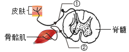
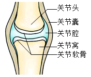

2023年北京市中考生物真题 · 选择题 第11、12、13、14、15题
11. 一位B型血的外伤患者需要大量输血，应为他输入（ ）
A. A型血B. B型血C. O型血D. AB型血
12. 人体产生 代谢废物主要以尿液的形式排出体外。健康人的尿液中一般不含（ ）
代谢废物主要以尿液的形式排出体外。健康人的尿液中一般不含（ ）
A. 血细胞B. 尿素C. 无机盐D. 尿酸
13. 下列关于人体肺泡的叙述错误的是（ ）
A. 肺泡数目多B. 肺泡是细支气管末端膨大形成的
C. 肺泡壁很薄D. 血液流经肺泡外毛细血管后氧气减少
14. 下图为反射弧结构示意图，相关叙述错误的是（ ）

A. 反射弧是反射的结构基础B. 骨骼肌是感受器
C. ①是传入神经纤维D. 脊髓是低级神经中枢
15. 下图为关节结构示意图，关于关节的结构和功能对应有误的是（ ）

A. 关节囊——使关节更加牢固B. 关节腔——内有减少摩擦的滑液
C. 关节头和关节窝——适于肌肉附着D. 关节软骨——起到缓冲作用